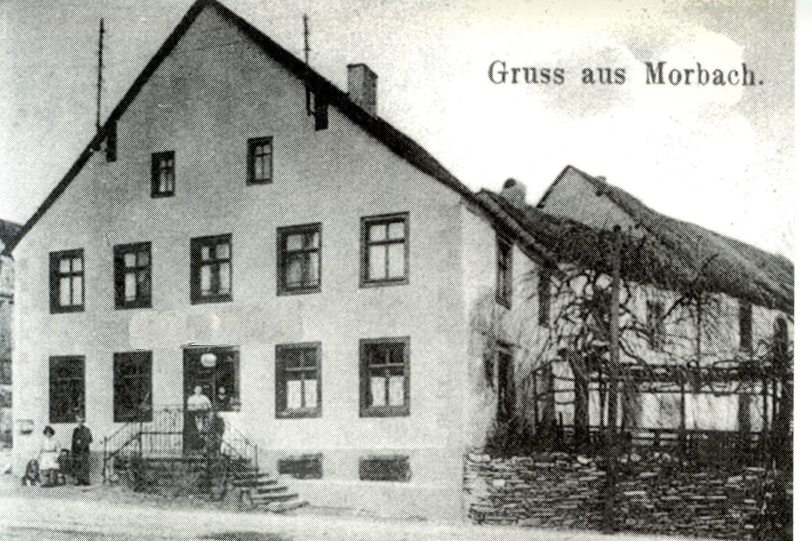

Meine frühesten Erinnerungen an die amerikanischen Soldaten betreffen die Zeit um das Jahr 1958. Damals waren die Besatzungskräfte zahlreich: Auf dem Wenigerather Munitionslager und dem nahegelegenen Flugplatz Hahn lebten zeitweise mehr als 10.000 amerikanische Soldaten mit ihren Familien. Deshalb gehörten Begegnungen mit ihnen zu unserem ganz normalen Alltag.
Für uns Kinder waren die Amerikaner – von uns meist schlicht „Amis“ genannt – wie Wesen aus einer anderen Welt. Menschen mit schwarzer Hautfarbe waren im Hunsrück eine Rarität, und nun begegneten sie uns als Teil dieser fremden Gemeinschaft. Die Amis hatten Deutschland befreit und wurden deshalb geschätzt und gefeiert. Doch nicht nur deshalb: Sie wirkten auf uns offen, freundlich und großzügig – Eigenschaften, die uns Hunsrückern eher fremd waren.
Die Amis taten aber auch einiges, um diesen Eindruck zu festigen.
Besonders lebhaft erinnere ich mich an Begegnungen mit den Soldaten und ihren Fahrzeugen. Manchmal hörten wir aus der Ferne den dumpfen Motorenlärm von Panzern. Zunächst leise, dann immer bedrohlicher. Wir wussten, was nun folgen würde: Sie würden von der Hunsrückhöhenstraße kommend die Bernkasteler Straße hinauf und weiter in Richtung Baumholder fahren.
Also suchten wir uns den besten Platz – entweder direkt am Straßenrand oder, noch besser, auf dem Sims am Eingang zum Gasthaus von Maria Rahn. Dort waren wir den Panzerbesatzungen besonders nah.

Und dann ging es los: Mit einem Affenzahn rasten die Panzer die Straße hinauf. Aus den Auspuffrohren quoll dichter, schwarzer Rauch. Die Panzerketten rasselten und hinterließen ihre Spuren im weichen Asphalt. Der Lärm war für uns kaum auszuhalten. Gleichzeitig waren wir, gerade einmal vier Jahre alt, vollkommen fasziniert von diesem Schauspiel.
Die Soldaten auf den Panzern winkten uns freundlich zu. Wir winkten zurück und versuchten, den ohrenbetäubenden Lärm mit unseren Ausrufen zu übertönen. „Schuing Gamm, Schuing Gamm“ riefen wir aus vollem Halse.
Die Amis hatten ihren Spaß daran und warfen uns Streifen des begehrten „Wrigley’s Spearmint“-Kaugummis zu. Wer geschickt war und etwas Glück hatte, konnte eine dieser Köstlichkeiten ergattern. Für uns waren diese Kaugummistreifen mehr als nur eine Süßigkeit. Sie waren ein Stück Kontakt zu einer fremden, wohlhabenden Welt, die wir irgendwann selbst kennenlernen wollten.
Mir ist das später gelungen – und diese frühen Begegnungen haben vielleicht dazu beigetragen.
Farbfoto: Szene mit KI nachempfunden. Schwarzweiß-Foto: Original-Aufgang zum Gasthaus Rahn (Foto: Berthold Staudt).